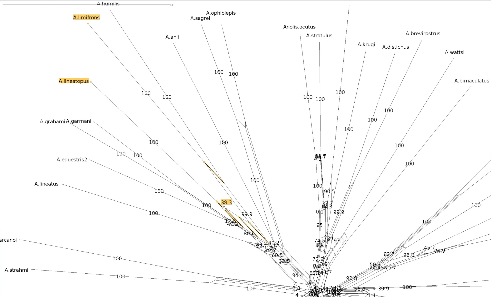

Phylogenetics - Back to Basics - Phylogenetic Networks
Contributors
#About these slides
The following phylogenetic networks of Anolis species were generated in SplitsTree. They represent selected screenshots of networks explored as a live demo in the video associated with these slides.
—
#Uncorrected P model
Phylogenetic network of Anolis species created in SplitsTree using the uncorrected P model.
 —
#Exploring splits
—
#Exploring splits
Click on the branches of the network to explore different splits. Here A. ahli appears in two different splits highlighted in yellow.
.pull-left[  ]
]
.pull-right[  ]
]
#Let’s follow a split
This is the network made using the uncorrected p model. We will follow the split containing A. lineatopus and A. limifrons through different models.

#Jukes Cantor Model
These networks were created using the Jukes Cantor model. Note that the species A. limifrons appears in two alternate splits.
.pull-left[  ]
]
.pull-right[  ]
]
#HKY85 Model
This network was created with the HKY85 model. Note that A. limfrons is paired with A. humilis in this split.

#Bootstrapped network
 —
#Bootstrapped network - a closer look
—
#Bootstrapped network - a closer look
Let’s explore our two splits again
.pull-left[  ]
]
.pull-right[  ]
#Bootstrapped network - a closer look
This the centre of our bootstrapped network. Note that the values are smaller.

Thank you!
Thank you!
This material is the result of a collaborative work. Thanks to the Galaxy Training Network and all the contributors! Tutorial Content is licensed under
Creative Commons Attribution 4.0 International License.
Tutorial Content is licensed under
Creative Commons Attribution 4.0 International License.